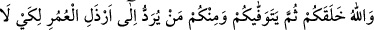
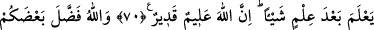
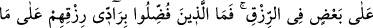
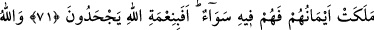
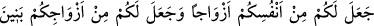
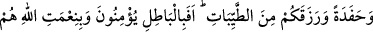
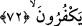

NANKÖRLÜK MÜ
EDİYORLAR?
70. Sizi Allah yarattı; sonra sizi vefat ettirecek. Daha önce bilgili iken hiçbir şeyi
bilmez hâle gelsin diye sizden bazı kimseler ömrün en kötü çağına kadar
yaşatılacak. Şüphesiz ki Allah bilendir, kudretlidir.
71. Allah kiminize kiminizden daha bol rızık verdi. Bol rızık verilenler, rızıklarını
ellerinin altındakilere verip de bu hususta kendilerini onlara eşit kılmazlar. Durum
böyle iken Allah’ın nîmetini inkâr mı ediyorlar?
72. Allah size kendi nefislerinizden eşler yarattı, eşlerinizden de sizin için oğullar
ve torunlar yarattı ve sizi temiz gıdalarla rızıklandırdı. Onlar hâla bâtıla inanıp
Allah’ın nîmetine nankörlük mü ediyorlar?
“Sizi” ilim ve kudretiyle her şeyi kuşatan “Allah yarattı” sizi var etti, yokluktan
varlığa, yokluk zulmetinden varlık nurlarının sahrasına çıkardı.
“Sonra sizi vefat ettirecek” Sonra çocuk, genç ve yaşlı olarak muhtelif yaşlarda
ruhlarınızı kabz edecek. Küçük tehire, yaşlı takdîme (öne almaya) kâdir olamayacak.
Bir kısmınız da kuvvetli halinde iken vefat edecek.
“Daha önce bilgili iken hiçbir şeyi bilmez hâle gelsin diye” kötü anlayış ve unutma
konusunda çocukluk haline benzer bir hâle dönmesi için, demektir. Bir şeyi bildikten
sonra onu çabucak unutur, öyle ki sorulsa bilmez. Sonuç olarak, bu durum onu, bildiğini
unutmaya kadar götürür ve bilgisine bilgi katmasını engeller. Çünkü bu kişi, eğer
bildiğini unutuyorsa, ilmi nasıl artabilir.
“Sizden bazı kimseler” vefât ettirilmeden önce “ömrün en kötü çağına kadar
yaşatılacak.” Bu, yaşlılık ve bunaklık zamanıdır. Bu dönemde insan ilk çocukluk
yıllarında olduğu gibi zayıf bünyeli, aklı ve kuvveti noksan, anlayışı kıt bir duruma